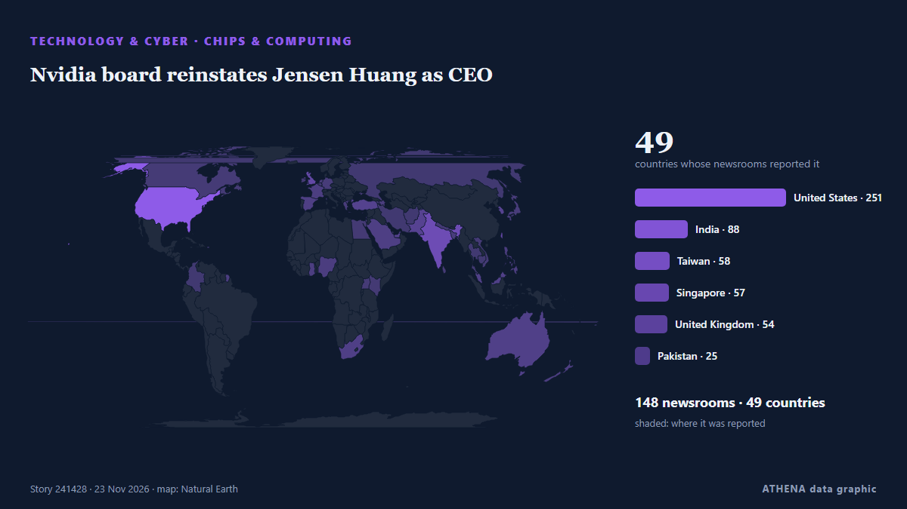

Technologie, IA et cybersécurité
SponsoriséPrésenté par  Cybernetics and Artificial Intelligence Lab Welcome to the Cybernetics and Artificial Intelligence Laboratory, established at the Department of Business Administration of the National and Kapodistrian University of Athens. The lab is headed by Professor Dimitrios Thomakos. The lab aims to do research that can be published in top venues. Our research uses tools and methods of Artificial Intelligence, and lies in the following areas: - Forecasting - Decision making - Cyber security - Finance We are always looking forward to collaborating with exceptional students!
Cybernetics and Artificial Intelligence Lab Welcome to the Cybernetics and Artificial Intelligence Laboratory, established at the Department of Business Administration of the National and Kapodistrian University of Athens. The lab is headed by Professor Dimitrios Thomakos. The lab aims to do research that can be published in top venues. Our research uses tools and methods of Artificial Intelligence, and lies in the following areas: - Forecasting - Decision making - Cyber security - Finance We are always looking forward to collaborating with exceptional students!
Les titres sont affichés en anglais, tels que publiés.

Puces et calculNvidia board reinstates Jensen Huang as CEO
Jensen Huang has been reinstated as the CEO of Nvidia after his resignation two weeks ago over an alleged affair with a suspected Chinese spy. de Arab News
| 10 nov. | 114 |
|---|---|
| 11 nov. | 83 |
| 12 nov. | 74 |
| 13 nov. | 87 |
| 14 nov. | 39 |
| 15 nov. | 44 |
| 16 nov. | 114 |
| 17 nov. | 102 |
| 18 nov. | 104 |
| 19 nov. | 104 |
| 20 nov. | 64 |
| 21 nov. | 28 |
| 22 nov. | 41 |
| 23 nov. | 21 |
Nepal and India sign eight MoUs on cooperation in multiple sectors
Agreements cover forensic science, police training, civil service capacity building, satellite communications, health, urban development and traditional medicine. de The Kathmandu Post
South Korea vows to stabilise stock market after KOSPI drops 5%
SEJONG: South Korea reiterated plans on Monday to stabilise its stock market if needed, as the KOSPI plummeted 5% and Finance Minister Lee Hyoung-il projected solid economic growth next year. de Business Recorder
Italy Gives Tesla Green Light for Assisted Driving
The landmark approval makes Italy the first major EU market to allow the technology on its roads, with drivers still required to remain alert. de News of Bahrain
Many Etsy Sellers Close Up Shop Over Site’s New A.I. Policy
Numerous longtime users of the online marketplace have left the platform because they do not want their work training artificial intelligence. de New York Times Business
US seeks answers on Nvidia’s sale of chips to China, Bessent says
The US is seeking answers from Nvidia on its chip sales to China and will find… de BusinessWorld
2 probes enter orbit around Mercury on Japan-Europe joint mission
Two probes, part of the BepiColombo joint Japan-Europe mission, have entered orbit around Mercury, the European Space Agency said Sun. de Mainichi (English)
Landmine blast kills 5 children in northwest Syria: state media
A land mine explosion in the Idlib province of northwest Syria killed four children and injured two others. de Arab News
President Samia arrives in Ethiopia ahead of AU maternal health roadmap launch
Tanzania’s President Samia Suluhu Hassan is expected to launch a five-year African Union roadmap targeting preventable maternal and newborn deaths and children missing vaccinations. de Nile Post
OpenAI chief scientist urges industry limits on AI development
Jakub Pachocki warned that AI could accelerate advances in its own development as soon as 2027. de The Straits Times
Nvidia's accounting is focus of US SEC investigation, sources say
The U.S. Securities and Exchange Commission is probing Nvidia's accounting practices, said two people briefed on the matter, adding to the legal woes facing the scandal-hit chip giant. de The Korea Times
Microsoft, Google turn to Intel EMIB as CSPs seek alternatives to TSMC CoWoS
Intel and Microsoft jointly announced on November 18, US time, that Microsoft will adopt Intel Foundry's embedded multi-die interconnect bridge (EMIB) advanced packaging technology for its custom… de DigiTimes Asia
FBI reportedly investigating apparent hack of its criminal database
The National Crime Information Center database is used by federal and local law enforcement to share information. de BBC News
Exclusive-Like SpaceX, Anthropic ran an unusual IPO process, chafing some bankers
Bankers criticised SpaceX's tight control over its IPO process, which limited advisers' access to information. de Express Tribune
Honda to launch new hybrid Avancier SUV in Japan after debut in Thailand
The Avancier will not be sold in the US, Honda’s biggest market, but will occupy the top spot in its Asia-Pacific SUV lineup, above the popular CR-V. de Free Malaysia Today
Little Mercury gets its first visitor in years as a pair of spacecraft loop into orbit
CAPE CANAVERAL, Florida: A pair of spacecraft slipped into orbit around Mercury on Saturday after an eight-year cruise through the inner solar system to unravel our littlest planet’s mountain of… de Arab News
Influencer deepfakes used to stoke Canada-US tensions
Content creators say their identities are being stolen to create division. de The Straits Times
Countries agree to work toward ‘killer robots’ pact
GENEVA, Nov 20 - UN talks on rules for autonomous weapons headed into overtime on Friday with some nations including Russia dragging their feet and negotiators considering a non-binding deal on arms… de The Straits Times
Former IRGC commander, sanctioned by Canada, to address London Islamophobia conference
The 13th Islamic Human Rights Commission conference, titled 'Artificial Intelligence and Islamophobia,' will be held on December 13. de The Jerusalem Post
Anthropic claims AI-assisted breakthrough on 167-year-old math problem
Levent Alpoge says he has proved the Riemann hypothesis, proposed by Bernhard Riemann in 1859. de Express Tribune
Africa: WGS Dialogue for Latin America and the Caribbean Explores Stronger Cooperation in Shaping the Future
[WGS] 10 heads of state and government and international organisations. de AllAfrica
'Not MAGA' anymore: Elon Musk has regrets
Musk was referring to the technological singularity, a point at which AI accelerates beyond our understanding. de Inc.
Bitcoin price drops to $60K as Anthropic drops to $87 in tech sell-off
Bitcoin price strength felt pressure from falling US equities as traders reassessed AI prospects after Anthropic’s IPO. de Cointelegraph
Signal Blocks AI Agents From Reading Private Chats via Screenshots on Android and iOS
Signal has announced that it will restrict screenshots by default to stop artificial intelligence (AI) agents from reading private chats on Android and iOS devices, but conceded that the protection… de The Hacker News
Trump threatens to tax US firms that build data centres abroad
WASHINGTON: President Donald Trump threatened on Friday to impose a steep tax on US companies that build data centres overseas. de New Straits Times
Nvidia faces US accounting probe amid deepening turmoil: Media
The Securities and Exchange Commission (SEC) inquiry is in its early stages. de The Straits Times
Anthropic’s post-debut stumble delivers reality check for AI trade
Anthropic could offer an early read on investor appetite for the sector after a turbulent stretch, with a sustained decline likely to deepen concerns over lofty valuations and massive AI spending. de Rappler
India’s skills will protect jobs from AI: Modi in Uttar Pradesh
The Uttar Pradesh Skill Development Mission has trained more than 1.7 million young people since 2017, with over 7 lakh securing jobs through campus placements. de Hindustan Times
Oracle says its OpenAI contract is fully funded and pre-empts media reports
Oracle says it has secured all the funding it needs to fulfil its infrastructure contract with OpenAI. de The Next Web
White House replaces cyber director Sean Cairncross amid widespread tech outages
Sean Cairncross will be replaced by Pentagon chief information officer Kirsten Davies. de CNBC World
SpaceX Hires Democratic-Linked Lobbyists Ahead of Starlink Probes
Elon Musk’s SpaceX has retained five lobbyists from bipartisan Washington firm Mehlman Consulting, including several with close ties to congressional Democrats and past administrations, ahead of… de Kyiv Post
‘A crazy perfect storm’: Satya Nadella explains what caused Microsoft Outlook outage
Microsoft's CEO says AI agents could disrupt advertising-driven business models, forcing companies like Amazon to rethink how they compete for customers. de TechCrunch
WhatsApp Patches 3 Security Flaws, Including Android Bug Suspected of Use in Scams
Meta-owned WhatsApp has addressed security vulnerabilities, including one impacting its Android app that it suspects may have been exploited in connection with scam messages. de The Hacker News
New York Mayor Zohran Mamdani injured in soccer match against journalists
Zohran Mamdani revealed in a press briefing that he had torn his Achilles tendon. de The Straits Times
US lawmaker turns up heat on Musk over Ukraine Starshield disruptions
US Representative Jim Himes has warned SpaceX about potential funding cuts if it does not clarify its actions regarding Ukraine. de Times of India